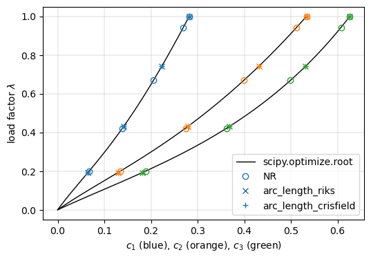
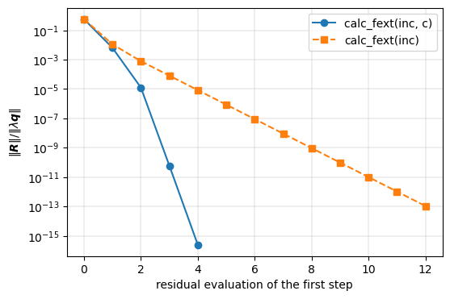
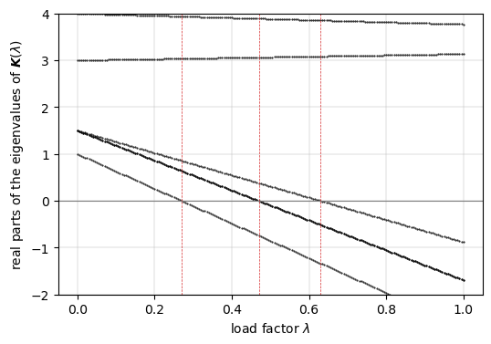
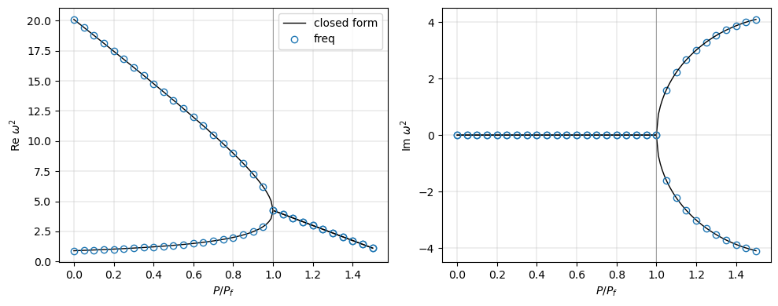

Follower loads and unsymmetric matrices#
Loads that depend on the configuration, such as follower (hydrostatic) pressures, are supported through optional keyword arguments of the callables of Analysis, see callbacks: calc_fint, calc_kC and calc_kG receive the load factor inc when they declare it, and calc_fext receives the current configuration c, returning the load vector \(-\partial \boldsymbol{R}/\partial \lambda\) used by the arc-length methods. Their load
stiffness makes the tangent stiffness matrix unsymmetric in general (Schweizerhof and Ramm, 1984), which the solvers support: solve and the non-linear solvers use LU factorizations, lb selects the solvers of unsymmetric matrices when needed, symmetric=None, and freq uses general eigenvalue solvers by default.
The models are those of the tests tests/test_follower_loads.py, tests/test_inertia_unsymmetric.py, tests/test_follower_freq_static.py and tests/test_linear_buckling_unsymmetric.py, some of whose helper functions are imported.
References: Schweizerhof, K., Ramm, E., Displacement dependent pressure loads in nonlinear finite element analyses, Computers & Structures, 18(6), 1099-1114, 1984, https://doi.org/10.1016/0045-7949(84)90154-8; Ziegler, H., Die Stabilitätskriterien der Elastomechanik, Ingenieur-Archiv, 20(1), 49-56, 1952, https://doi.org/10.1007/BF00536796; Bolotin, V.V., Nonconservative Problems of the Theory of Elastic Stability, Pergamon Press, Oxford, 1963.
[1]:
%matplotlib inline
import os
import sys
# the helper functions of the tests are imported from the folder tests/
sys.path.insert(0, os.path.join('..', 'tests'))
import numpy as np
import matplotlib.pyplot as plt
from scipy.linalg import eig
from scipy.optimize import root
from scipy.sparse import csr_matrix
from structsolve import Analysis, freq, lb
from structsolve.linear_buckling import is_symmetric
from test_inertia_unsymmetric import LinearUnsymmetric, dense_count
from test_follower_freq_static import (K_SPRING, L_BAR, MASS,
linear_follower_problem, ziegler)
from test_linear_buckling_unsymmetric import (FOLLOWER, load_follower,
lowest_positive_real,
relative_residuals)
def print_table(rows, header=('quantity', 'computed', 'reference', 'rel. diff.')):
"""Rows of (label, computed, reference); the relative difference is
|computed - reference|/|reference|"""
w = max(len(header[0]), max(len(r[0]) for r in rows))
print(f'{header[0]:<{w}} {header[1]:>16} {header[2]:>16} {header[3]:>10}')
for label, comp, ref in rows:
rel = abs(comp - ref)/abs(ref)
print(f'{label:<{w}} {comp:16.10g} {ref:16.10g} {rel:10.2e}')
Non-linear analyses#
Three hardening springs, \(\boldsymbol{F}_{int}(\boldsymbol{c}) = \boldsymbol{K} \boldsymbol{c} + \{a_i c_i^3\}\), under a load that depends on the configuration, \(\boldsymbol{F}(\boldsymbol{c}, \lambda) = \lambda (\boldsymbol{q}_0 + \boldsymbol{Q} \boldsymbol{c})\), with the unsymmetric load stiffness matrix \(\boldsymbol{K}_F = -\partial \boldsymbol{F}/\partial \boldsymbol{c} = -\lambda \boldsymbol{Q}\). The residual and its derivatives are
calc_fint(c, inc) returns \(\boldsymbol{F}_{int} - \lambda \boldsymbol{Q} \boldsymbol{c}\), calc_kC(c, NLgeom, inc) the matrix \(\boldsymbol{K}_T\) and calc_fext(inc, c) the load vector \(\lambda (\boldsymbol{q}_0 + \boldsymbol{Q} \boldsymbol{c})\) of the configuration, with the matrices of make_problem of tests/test_follower_loads.py:
[2]:
class FollowerProblem(object):
def __init__(self, K, a, q0, Q, with_c=True):
self.K = K
self.a = a
self.q0 = q0
self.Q = Q
self.with_c = with_c
self.an = None
# (inc, ||R||/||lbd*q||, number of converged increments) of each
# calc_fint call
self.calls = []
def fint_el(self, c):
return self.K @ c + self.a*c**3
def residual(self, c, lbd):
return self.fint_el(c) - lbd*(self.q0 + self.Q @ c)
def calc_fext(self, inc=1., silent=True, c=None):
if c is None:
return inc*self.q0
return inc*(self.q0 + self.Q @ c)
def calc_fint(self, c, inc=1., silent=True):
R = self.residual(c, inc)
ref = max(np.linalg.norm(inc*(self.q0 + self.Q @ c)), 1e-300)
step = len(self.an.increments) if self.an is not None else 0
self.calls.append((inc, np.linalg.norm(R)/ref, step))
return self.fint_el(c) - inc*(self.Q @ c)
def calc_kC(self, c=None, NLgeom=False, inc=1., silent=True):
if not NLgeom:
return csr_matrix(self.K)
return csr_matrix(self.K + np.diag(3*self.a*c**2) - inc*self.Q)
def calc_kG(self, c=None, NLgeom=False, silent=True):
return csr_matrix(self.K.shape)
def analysis(self, **kwargs):
if self.with_c:
calc_fext = self.calc_fext
else:
calc_fext = lambda inc=1., silent=True: self.calc_fext(inc)
an = Analysis(calc_fext, self.calc_fint, self.calc_kC, self.calc_kG)
for k, v in kwargs.items():
setattr(an, k, v)
self.an = an
return an
def make_problem(with_c=True):
n = 3
K = 100.*(2*np.eye(n) - np.eye(n, k=1) - np.eye(n, k=-1))
K[-1, -1] = 100.
a = np.array([20., 40., 60.])
q0 = np.array([0., 0., 30.])
# unsymmetric load stiffness, of the order of K
Q = np.array([[0., 30., -20.],
[-30., 10., 40.],
[10., -40., 20.]])
return FollowerProblem(K, a, q0, Q, with_c=with_c)
Newton-Raphson and the two arc-length methods trace the path to \(\lambda = 1\). The reference is an independent solution of \(\boldsymbol{R}(\boldsymbol{c}, \lambda) = \boldsymbol{0}\) at each converged load factor by scipy.optimize.root (Powell’s hybrid method, finite difference Jacobian), started from the converged configuration of the previous load factor:
[3]:
def reference(pb, lbds, tol=1e-14):
c = np.zeros(3)
out = []
for lbd in lbds:
c = root(lambda x: pb.residual(x, lbd), c, method='hybr', tol=tol).x
out.append(c)
return np.array(out)
pb_ref = make_problem()
lbd_curve = np.linspace(0., 1., 101)
c_curve = reference(pb_ref, lbd_curve)
paths = {}
for method in ['NR', 'arc_length_riks', 'arc_length_crisfield']:
pb = make_problem()
an = pb.analysis(NL_method=method, initialInc=0.2)
an.static(NLgeom=True, silent=True)
paths[method] = (np.asarray(an.increments), np.asarray(an.cs))
print(f'{method:22s}: {len(an.increments)} increments, '
f'{len(pb.calls)} calls to calc_fint')
fig, ax = plt.subplots(figsize=(6, 4))
for i in range(3):
ax.plot(c_curve[:, i], lbd_curve, 'k-', lw=1,
label='scipy.optimize.root' if i == 0 else None)
for (method, (inc, cs)), mk in zip(paths.items(), ['o', 'x', '+']):
for i in range(3):
ax.plot(cs[:, i], inc, mk, mfc='none',
color=f'C{i}', label=f'{method}' if i == 0 else None)
ax.set_xlabel('$c_1$ (blue), $c_2$ (orange), $c_3$ (green)')
ax.set_ylabel(r'load factor $\lambda$')
ax.grid(True, lw=0.3)
ax.legend()
plt.show()
rows = []
for method, (inc, cs) in paths.items():
ref = reference(pb_ref, inc)
err = np.linalg.norm(cs - ref, axis=1)/np.linalg.norm(ref, axis=1)
i = np.argmax(err)
rows.append((f'{method}: ||c|| at lambda = {inc[i]:.3f} (worst)',
np.linalg.norm(cs[i]), np.linalg.norm(ref[i])))
print(f'{method}: max ||c - c_ref||/||c_ref|| over the increments = '
f'{err.max():.2e}')
print()
print_table(rows)
NR : 5 increments, 21 calls to calc_fint
arc_length_riks : 4 increments, 20 calls to calc_fint
arc_length_crisfield : 4 increments, 20 calls to calc_fint

NR: max ||c - c_ref||/||c_ref|| over the increments = 7.58e-11
arc_length_riks: max ||c - c_ref||/||c_ref|| over the increments = 2.06e-11
arc_length_crisfield: max ||c - c_ref||/||c_ref|| over the increments = 1.15e-12
quantity computed reference rel. diff.
NR: ||c|| at lambda = 0.943 (worst) 0.8389861812 0.8389861811 7.55e-11
arc_length_riks: ||c|| at lambda = 0.743 (worst) 0.7200093007 0.7200093006 2.06e-11
arc_length_crisfield: ||c|| at lambda = 0.743 (worst) 0.7200093006 0.7200093006 1.14e-12
Quadratic convergence of Riks only with the load vector of the configuration#
The bordered system of the Riks method is Newton’s method applied to the equilibrium equations augmented with the arc-length constraint only when the load vector of the bordered system is the exact \(-\partial \boldsymbol{R}/\partial \lambda = \boldsymbol{q}_0 + \boldsymbol{Q} \boldsymbol{c}\), i.e. when calc_fext accepts c. With the constant reference vector \(\boldsymbol{q}_0\), calc_fext(inc) without c, the Jacobian of the augmented system is approximate and the
iterations converge linearly. The relative residuals \(e_k = \|\boldsymbol{R}\|/\|\lambda \boldsymbol{q}\|\) of the iterations of the first step, with relTOL=1e-13, and the convergence order estimated as \(\log(e_{k+1}/e_k)/\log(e_k/e_{k-1})\) in the asymptotic range, \(e_{k-1} < 5 \cdot 10^{-2}\) and \(e_{k+1} > 10^{-12}\) (function orders of tests/test_follower_loads.py), against the order 2 of Newton’s method:
[4]:
def orders(errors, floor=1e-12):
return [np.log(e2/e1)/np.log(e1/e0)
for e0, e1, e2 in zip(errors[:-2], errors[1:-1], errors[2:])
if e2 > floor and e0 < 5e-2]
first_step = {}
for with_c in (True, False):
pb = make_problem(with_c=with_c)
an = pb.analysis(NL_method='arc_length_riks', initialInc=0.5,
relTOL=1e-13, maxNumIter=60)
an.static(NLgeom=True, silent=True)
# the first value is the residual of the tangent predictor
first_step[with_c] = [e for inc, e, step in pb.calls if step == 0]
print(f'calc_fext with c: {with_c!s:5}: last load factor '
f'{an.increments[-1]}, {len(first_step[with_c])} residual '
f'evaluations in the first step')
fig, ax = plt.subplots(figsize=(6, 4))
for with_c, errors in first_step.items():
ax.semilogy(errors, 'o-' if with_c else 's--',
label='calc_fext(inc, c)' if with_c else 'calc_fext(inc)')
ax.set_xlabel('residual evaluation of the first step')
ax.set_ylabel(r'$\|\boldsymbol{R}\| / \|\lambda \boldsymbol{q}\|$')
ax.grid(True, lw=0.3)
ax.legend()
plt.show()
p_c = orders(first_step[True])
print('orders with c :', np.round(p_c, 3))
print('orders without c:', np.round(orders(first_step[False]), 3))
print()
print_table([('Riks, calc_fext(inc, c): smallest order', min(p_c), 2.)])
calc_fext with c: True : last load factor 1.0, 5 residual evaluations in the first step
calc_fext with c: False: last load factor 1.0, 13 residual evaluations in the first step

orders with c : [1.967]
orders without c: [0.858 1. 1.001 1. 1. 1. 1. 1. 0.999]
quantity computed reference rel. diff.
Riks, calc_fext(inc, c): smallest order 1.967337276 2 1.63e-02
Inertia of unsymmetric tangent stiffness matrices#
The symmetric indefinite factorization of PARDISO counts the negative eigenvalues of a symmetric tangent stiffness matrix (Analysis.inertia with linear_solver='pardiso'); an unsymmetric one is factorized by SuperLU, whose LU factorization gives only the sign of the determinant, the parity of the number of negative real eigenvalues. With Analysis.inertia_num_eigvals = k, the number of negative real eigenvalues among the \(k\) of smallest magnitude is computed at every converged
increment by shift-invert at \(\sigma = 0\) with ARPACK, with the LU factorization of the converged state, and recorded in Analysis.num_negative_eigvals, such that max_inertia_jump applies, see newton_raphson._eigvals_inertia.
It detects the divergence points, where a real eigenvalue crosses zero, the static critical points of the path: limit points and bifurcations. It does not detect flutter: a complex pair \(a \pm i b\) whose real part becomes negative is not a static critical point, the tangent staying regular, and it is not counted (the number of such pairs among the \(k\) is logged), the kinetic criterion of freq being needed, see below. Negative real eigenvalues beyond the \(k\) of smallest magnitude are missed; an odd number of them is reported, since the parity of the count then differs from the sign of the determinant.
The problem of the class LinearUnsymmetric of tests/test_inertia_unsymmetric.py is linear in \(\boldsymbol{c}\), with the tangent stiffness matrix
unsymmetric and non-normal through the random \(\boldsymbol{S}\), the load on the degree of freedom 0, uncoupled from the others, such that the path is \(c_0 = \lambda/k_0\). The block diagonal \(\boldsymbol{D}_0 + \lambda \boldsymbol{D}_1\) has two real eigenvalues that cross zero at \(\lambda = 0.27\) and \(0.63\), and a complex pair whose real part crosses zero at \(\lambda = 0.47\). The reference count is that of the negative real eigenvalues of the dense
\(\boldsymbol{K}(\lambda)\) by numpy.linalg.eigvals, among the 6 of smallest magnitude and among all; the exact one is \([\lambda > 0.27] + [\lambda > 0.63]\):
[5]:
p = LinearUnsymmetric([0.27, 0.63], complex_crossings=[0.47])
lbds = np.linspace(0., 1., 201)
lam = np.array([np.linalg.eigvals(p.K(l)) for l in lbds])
fig, ax = plt.subplots(figsize=(6, 4))
# the 8 lowest real parts at each load factor
real_sorted = np.sort(lam.real, axis=1)[:, :8]
ax.plot(lbds, real_sorted, 'k.', ms=1)
ax.axhline(0., color='gray', lw=0.8)
for lc in (0.27, 0.47, 0.63):
ax.axvline(lc, color='C3', lw=0.5, ls='--')
ax.set_ylim(-2., 4.)
ax.set_xlabel(r'load factor $\lambda$')
ax.set_ylabel(r'real parts of the eigenvalues of $\boldsymbol{K}(\lambda)$')
ax.grid(True, lw=0.3)
plt.show()
for method in ['NR', 'arc_length_riks', 'arc_length_crisfield']:
p = LinearUnsymmetric([0.27, 0.63], complex_crossings=[0.47])
an = p.analysis(NL_method=method, inertia=True, inertia_num_eigvals=6,
linear_solver='splu', initialInc=0.1, maxInc=0.1)
an.static(NLgeom=True, silent=True)
print(f'\n{method}')
print(f'{"lambda":>8} {"count":>5} {"dense, 6":>8} {"dense, all":>10}'
f' {"exact":>5} {"det sign":>8}')
for lbd, nneg, det in zip(an.increments, an.num_negative_eigvals,
an.det_signs):
print(f'{lbd:8.4f} {nneg:5d} {dense_count(p.K(lbd), 6):8d} '
f'{dense_count(p.K(lbd)):10d} '
f'{int(lbd > 0.27) + int(lbd > 0.63):5d} {det:8d}')

NR
lambda count dense, 6 dense, all exact det sign
0.1000 0 0 0 0 1
0.2000 0 0 0 0 1
0.3000 1 1 1 1 -1
0.4000 1 1 1 1 -1
0.5000 1 1 1 1 -1
0.6000 1 1 1 1 -1
0.7000 2 2 2 2 1
0.8000 2 2 2 2 1
0.9000 2 2 2 2 1
1.0000 2 2 2 2 1
arc_length_riks
lambda count dense, 6 dense, all exact det sign
0.1000 0 0 0 0 1
0.2000 0 0 0 0 1
0.3000 1 1 1 1 -1
0.4000 1 1 1 1 -1
0.5000 1 1 1 1 -1
0.6000 1 1 1 1 -1
0.7000 2 2 2 2 1
0.8000 2 2 2 2 1
0.9000 2 2 2 2 1
1.0000 2 2 2 2 1
1.0000 2 2 2 2 1
arc_length_crisfield
lambda count dense, 6 dense, all exact det sign
0.1000 0 0 0 0 1
0.2000 0 0 0 0 1
0.3000 1 1 1 1 -1
0.4000 1 1 1 1 -1
0.5000 1 1 1 1 -1
0.6000 1 1 1 1 -1
0.7000 2 2 2 2 1
0.8000 2 2 2 2 1
0.9000 2 2 2 2 1
1.0000 2 2 2 2 1
1.0000 2 2 2 2 1
The count goes 0, 1, 2 and agrees with the dense count at every increment, whereas the sign of the determinant returns to +1 after the second crossing (the arc-length paths have a converged point at \(\lambda = 1 - 10^{-16}\), printed as 1.0000, before the last one at exactly 1.0). The complex pair, whose real part is negative beyond \(\lambda = 0.47\), is not counted:
[6]:
lam1 = np.linalg.eigvals(p.K(1.))
print('eigenvalues of K(1) with a negative real part:',
np.round(lam1[lam1.real < 0], 4))
eigenvalues of K(1) with a negative real part: [-2.7037+0.j -1.6915+2.j -1.6915-2.j -0.881 +0.j]
Linear static analysis#
With a configuration-dependent load, Analysis.static(NLgeom=False) solves the geometrically linear problem \(\boldsymbol{K}_{C0} \boldsymbol{c} = \boldsymbol{F}(\boldsymbol{c})\), here with \(\boldsymbol{F}(\boldsymbol{c}) = \boldsymbol{F}_0 + \boldsymbol{Q} \boldsymbol{c}\) and the random matrices of linear_follower_problem of tests/test_follower_freq_static.py, \(\boldsymbol{Q}\) scaled to 0.3 times the critical load stiffness. The reference is the dense solution of
\((\boldsymbol{K}_{C0} - \boldsymbol{Q}) \boldsymbol{c} = \boldsymbol{F}_0\) by numpy.linalg.solve; without the keyword argument c in calc_fext the load is the constant \(\boldsymbol{F}_0\), and the reference \(\boldsymbol{K}_{C0} \boldsymbol{c} = \boldsymbol{F}_0\):
[7]:
rows = []
for with_c in (True, False):
pb = linear_follower_problem(with_c=with_c)
an = pb.analysis()
an.relTOL = 1e-12
increments, cs = an.static(NLgeom=False, silent=True)
A = pb.K0 - pb.Q if with_c else pb.K0
ref = np.linalg.solve(A, pb.F0)
label = 'F(c) = F0 + Q c' if with_c else 'F = F0'
print(f'{label}: c = {np.round(cs[0], 6)}')
print(f'{label:15s} ref = {np.round(ref, 6)}')
rows.append((f'{label}: ||c||', np.linalg.norm(cs[0]),
np.linalg.norm(ref)))
print(f'max |c - ref|/max |ref| = '
f'{np.abs(cs[0] - ref).max()/np.abs(ref).max():.2e}\n')
print_table(rows)
F(c) = F0 + Q c: c = [-0.092323 0.15736 -0.016753 0.130671 -0.060929 -0.121297]
F(c) = F0 + Q c ref = [-0.092323 0.15736 -0.016753 0.130671 -0.060929 -0.121297]
max |c - ref|/max |ref| = 6.97e-13
F = F0: c = [-0.074061 0.165399 -0.022207 0.114862 -0.064526 -0.123864]
F = F0 ref = [-0.074061 0.165399 -0.022207 0.114862 -0.064526 -0.123864]
max |c - ref|/max |ref| = 1.68e-16
quantity computed reference rel. diff.
F(c) = F0 + Q c: ||c|| 0.2628053934 0.2628053934 2.92e-13
F = F0: ||c|| 0.2569709412 0.2569709412 0.00e+00
Linear buckling with unsymmetric matrices#
lb solves \((\boldsymbol{K} + \lambda \boldsymbol{K}_G) \boldsymbol{u} = \boldsymbol{0}\). A symmetric positive definite \(\boldsymbol{K}\) of size 40 and an unsymmetric \(\boldsymbol{K}_G\), a symmetric negative definite matrix plus a small skew part, which keeps the eigenvalues real; the reference is the dense scipy.linalg.eig of \(\boldsymbol{K}_G \boldsymbol{u} = \mu \boldsymbol{K} \boldsymbol{u}\), \(\lambda = -1/\mu\), for the sparse
solver, the sparse solver without the dense fallback (max_dense_size=0) and the dense solver:
[8]:
def spd(n, rng):
X = rng.standard_normal((n, n))
return X @ X.T + n*np.eye(n)
rng = np.random.default_rng(3)
n = 40
K = spd(n, rng)
S = -spd(n, rng)/n
W = rng.standard_normal((n, n))
KG = S + 1e-3*(W - W.T)
print('KG symmetric:', is_symmetric(KG))
mu = eig(KG, K, right=False)
lam_ref = np.sort((-1/mu).real)
lam_ref = lam_ref[lam_ref > 0]
rows = []
for sparse_solver, max_dense_size in [(True, 2000), (True, 0), (False, 2000)]:
eigvals, eigvecs = lb(csr_matrix(K), csr_matrix(KG), silent=True,
sparse_solver=sparse_solver, num_eigvalues=6,
max_dense_size=max_dense_size)
res = relative_residuals(K, KG, eigvals[:5], eigvecs[:, :5])
print(f'sparse_solver={sparse_solver}, max_dense_size={max_dense_size}: '
f'real arrays {np.isrealobj(eigvals) and np.isrealobj(eigvecs)}, '
f'max relative residual {res.max():.1e}')
for i in range(5):
rows.append((f'sparse={sparse_solver!s:5}, max_dense_size='
f'{max_dense_size:4d}: lambda_{i+1}', eigvals[i],
lam_ref[i]))
print()
print_table(rows)
KG symmetric: False
sparse_solver=True, max_dense_size=2000: real arrays True, max relative residual 3.3e-15
sparse_solver=True, max_dense_size=0: real arrays True, max relative residual 3.3e-15
sparse_solver=False, max_dense_size=2000: real arrays True, max relative residual 1.3e-15
quantity computed reference rel. diff.
sparse=True , max_dense_size=2000: lambda_1 11.92188528 11.92188528 1.34e-15
sparse=True , max_dense_size=2000: lambda_2 12.57201198 12.57201198 4.10e-15
sparse=True , max_dense_size=2000: lambda_3 13.89536801 13.89536801 8.31e-15
sparse=True , max_dense_size=2000: lambda_4 14.70362176 14.70362176 1.21e-15
sparse=True , max_dense_size=2000: lambda_5 15.46914848 15.46914848 1.72e-15
sparse=True , max_dense_size= 0: lambda_1 11.92188528 11.92188528 1.34e-15
sparse=True , max_dense_size= 0: lambda_2 12.57201198 12.57201198 4.10e-15
sparse=True , max_dense_size= 0: lambda_3 13.89536801 13.89536801 8.31e-15
sparse=True , max_dense_size= 0: lambda_4 14.70362176 14.70362176 1.21e-15
sparse=True , max_dense_size= 0: lambda_5 15.46914848 15.46914848 1.72e-15
sparse=False, max_dense_size=2000: lambda_1 11.92188528 11.92188528 2.38e-15
sparse=False, max_dense_size=2000: lambda_2 12.57201198 12.57201198 1.70e-15
sparse=False, max_dense_size=2000: lambda_3 13.89536801 13.89536801 1.28e-16
sparse=False, max_dense_size=2000: lambda_4 14.70362176 14.70362176 7.25e-16
sparse=False, max_dense_size=2000: lambda_5 15.46914848 15.46914848 1.72e-15
Under follower loads, many negative or complex load multipliers may have a smaller modulus than the critical one, e.g. when the pressure is reversed. The sparse solver of lb searches the lowest positive real load multiplier along the positive real axis, see Eigenvalue solvers. The cantilevers of Schweizerhof and Ramm (1984) under a follower pressure, with the matrices of panels saved in
tests/data, \(\boldsymbol{K} = \boldsymbol{k}_0\) and \(\boldsymbol{K}_G = \boldsymbol{k}_G(\boldsymbol{c}_0) + \boldsymbol{k}_{C,follower}\), original and reversed (\(\pm \boldsymbol{K}_G\)). The reference is the lowest positive real load multiplier of the dense solver of all the eigenvalues, lb(..., sparse_solver=False); the sparse solver runs without the dense fallback, max_dense_size=0:
[9]:
rows = []
for name, sign, _ in FOLLOWER:
K, KG = load_follower(name, sign)
dense = lb(K, KG, silent=True, sparse_solver=False)[0]
ref = lowest_positive_real(dense)
finite = dense[np.isfinite(dense)]
smaller = finite[np.abs(finite) < ref]
eigvals, eigvecs = lb(K, KG, silent=True, max_dense_size=0)
res = relative_residuals(K, KG, eigvals, eigvecs)
print(f'{name}, sign {sign:+.0f}: size {K.shape[0]}, '
f'{len(smaller)} load multipliers of modulus smaller than the '
f'critical one, of which {np.sum(smaller.real < 0)} with a '
f'negative real part; relative residual of the first eigenpair '
f'{res[0]:.1e}')
rows.append((f'{name}, sign {sign:+.0f}: lambda_cr', eigvals[0].real,
ref))
print()
print_table(rows)
s1B1_m14n8, sign +1: size 260, 0 load multipliers of modulus smaller than the critical one, of which 0 with a negative real part; relative residual of the first eigenpair 8.7e-13
s1B1_m14n8, sign -1: size 260, 66 load multipliers of modulus smaller than the critical one, of which 66 with a negative real part; relative residual of the first eigenpair 2.4e-13
s3B2_m14n8, sign +1: size 268, 0 load multipliers of modulus smaller than the critical one, of which 0 with a negative real part; relative residual of the first eigenpair 1.4e-11
s3B2_m14n8, sign -1: size 268, 66 load multipliers of modulus smaller than the critical one, of which 66 with a negative real part; relative residual of the first eigenpair 5.1e-13
quantity computed reference rel. diff.
s1B1_m14n8, sign +1: lambda_cr 1.862156984 1.862156984 4.56e-13
s1B1_m14n8, sign -1: lambda_cr 15113.4151 15113.4151 3.55e-11
s3B2_m14n8, sign +1: lambda_cr 0.05446120166 0.05446120166 9.74e-12
s3B2_m14n8, sign -1: lambda_cr 1161.443761 1161.443761 2.57e-10
Flutter: the kinetic criterion#
Ziegler’s double pendulum (Ziegler, 1952), as in tests/test_follower_freq_static.py: two rigid bars of length \(l\), rotational springs \(k\) at the base and at the middle hinge, masses \(2m\) at the middle hinge and \(m\) at the tip, and a follower force \(P\) at the tip, tangential to the upper bar. With the absolute rotations of the bars as degrees of freedom,
\(\det \boldsymbol{K} = k^2\) for every \(P\): the stiffness matrix is never singular, and the static (divergence) criterion of lb finds no critical load. The natural frequencies are the roots of \(\det(\boldsymbol{K} - \omega^2 \boldsymbol{M}) = 0\),
real while the discriminant \(m^2 l^4 \left[(7k - 2Pl)^2 - 8k^2\right]\) is positive. They coalesce and become complex, flutter, at
the kinetic criterion of stability, the dynamic method of Bolotin (1963, Introduction and Sections 6 and 7, pp. 12-17). freq returns \(\lambda^2 = -\omega^2\), with its general eigenvalue solver for the unsymmetric \(\boldsymbol{K}\) (ziegler of the test module, with \(k = 3\), \(l = 0.5\), \(m = 2\)):
[10]:
k, l, m = K_SPRING, L_BAR, MASS
P_F = (3.5 - np.sqrt(2))*k/l
print(f'P_f = {P_F:.10g}')
K0, _ = ziegler(0.)
K1, _ = ziegler(1.)
print('lb of K0 + P KF, dense solver, load multipliers:',
lb(csr_matrix(K0), csr_matrix(K1 - K0), silent=True,
sparse_solver=False)[0])
def omega2_exact(P):
return np.sort(np.roots([2*m**2*l**4, -m*l**2*(7*k - 2*P*l),
k**2]).astype(complex))
Ps = np.linspace(0., 1.5*P_F, 151)
w2 = np.array([np.sort_complex(-freq(*map(csr_matrix, ziegler(P)),
silent=True, sparse_solver=False,
sort=False)[0]) for P in Ps])
w2_exact = np.array([omega2_exact(P) for P in Ps])
fig, axes = plt.subplots(1, 2, figsize=(10, 4))
for i in range(2):
axes[0].plot(Ps/P_F, w2_exact[:, i].real, 'k-', lw=1,
label='closed form' if i == 0 else None)
axes[0].plot(Ps[::5]/P_F, w2[::5, i].real, 'o', mfc='none', color='C0',
label='freq' if i == 0 else None)
axes[1].plot(Ps/P_F, w2_exact[:, i].imag, 'k-', lw=1)
axes[1].plot(Ps[::5]/P_F, w2[::5, i].imag, 'o', mfc='none', color='C0')
axes[0].set_ylabel(r'Re $\omega^2$')
axes[1].set_ylabel(r'Im $\omega^2$')
for ax in axes:
ax.set_xlabel(r'$P/P_f$')
ax.axvline(1., color='gray', lw=0.5)
ax.grid(True, lw=0.3)
axes[0].legend()
fig.tight_layout()
plt.show()
P_f = 12.51471863
lb of K0 + P KF, dense solver, load multipliers: [-inf -inf]

The frequencies at \(P = 0.5 P_f\) against the roots of the quadratic, and the flutter load found by bisection on the onset of complex eigenvalues (relative imaginary part above \(10^{-6}\), 40 bisections between \(0.9 P_f\) and \(1.1 P_f\)), with the dense solver and with the sparse one, for which 10 decoupled unit oscillators are added to the model (the sparse solvers compute at most size - 2 eigenvalues):
[11]:
def max_imag(lambda2):
return np.max(np.abs(np.imag(lambda2)))
rows = []
lam2 = freq(*map(csr_matrix, ziegler(0.5*P_F)), silent=True,
sparse_solver=False, sort=False)[0]
for i, (w2_num, w2_ref) in enumerate(zip(np.sort((-lam2).real),
omega2_exact(0.5*P_F).real)):
rows.append((f'omega_{i+1}^2 at P = 0.5 P_f', w2_num, w2_ref))
for sparse_solver, extra in [(False, 0), (True, 10)]:
kw = dict(silent=True, sparse_solver=sparse_solver, num_eigvalues=4,
sort=False)
a, b = 0.9*P_F, 1.1*P_F
for _ in range(40):
c = 0.5*(a + b)
lam2 = freq(*map(csr_matrix, ziegler(c, extra)), **kw)[0]
if max_imag(lam2) > 1e-6*np.abs(lam2).max():
b = c
else:
a = c
rows.append((f'P_f, bisection, sparse_solver={sparse_solver}',
0.5*(a + b), P_F))
print_table(rows)
quantity computed reference rel. diff.
omega_1^2 at P = 0.5 P_f 1.343355214 1.343355214 3.31e-16
omega_2^2 at P = 0.5 P_f 13.39928547 13.39928547 2.65e-16
P_f, bisection, sparse_solver=False 12.51471863 12.51471863 2.73e-13
P_f, bisection, sparse_solver=True 12.51471886 12.51471863 1.88e-08
The follower pressure loads of panels use all these features, see Shell.add_pressure_load(..., follower=True).